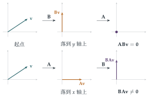

STEP II 1993，第 6 题
继续之前，请先阅读题目（原题为英文）。题目载于 STEP Support Programme 的题目资料库： step.maths.org/questions/93-s2-q6
引子
矩阵（matrix）可以相加，也可以相乘，所以我们很容易把它们当作数来看待。这道题正是要考验这种想法：它列出四条对数成立的“法则”，问哪些对矩阵仍然成立。结果大部分都不成立，而它们不成立的方式很有启发性。矩阵乘法不满足交换律（not commutative）；有些非零矩阵的乘积是零；而一个矩阵的二次方程可以有无穷多个解。
这些“失效”并不是缺陷，反而正是矩阵有用的原因：矩阵描述的是空间的变换（transformation），而以不同的次序进行两个变换，确实会得到不同的结果。1925 年，海森堡（Werner Heisenberg）发现量子力学中的物理量的表现像矩阵而不像数，而 \(\mathbf{AB} = \mathbf{BA}\) 不成立，正是不确定性原理（uncertainty principle）的数学形式。
动笔之前
对实数而言，为甚么 \(ab = 0\) 可推出 \(a = 0\) 或 \(b = 0\)？这个论证用到了数的哪一项性质？这项性质对矩阵成立吗？
若 \(ab = 0\) 而 \(a \neq 0\)，两边除以 \(a\) 便得 \(b = 0\)。这个论证需要每个非零的数都有逆（inverse）。非零矩阵却不一定有逆（行列式（determinant）为零的矩阵就没有），所以这个论证行不通。同时也要记住几何上的图像：矩阵是平面的一个变换，而乘积 \(\mathbf{AB}\) 的意思是“先做 \(\mathbf{B}\)，再做 \(\mathbf{A}\)”。
逐步解题
阶段 1 能否有 \(\mathbf{AB} = \mathbf{0}\) 但 \(\mathbf{BA} \neq \mathbf{0}\)？
从几何角度去想。你希望 \(\mathbf{B}\) 把所有东西送到一条直线上，然后 \(\mathbf{A}\) 把这条直线压成零。但次序调转时，\(\mathbf{A}\) 不应把所有东西都压到会被 \(\mathbf{B}\) 消去的地方。
设 \(\mathbf{A} = \begin{pmatrix} 1 & 0 \\ 0 & 0 \end{pmatrix}\)，它是到 \(x\) 轴上的投影（projection），把 \(y\) 轴消去；又设 \(\mathbf{B} = \begin{pmatrix} 0 & 0 \\ 1 & 0 \end{pmatrix}\)，它把 \((x, y)\) 送到 \((0, x)\)，即送到 \(y\) 轴上。于是 \[\mathbf{AB} = \begin{pmatrix} 1 & 0 \\ 0 & 0 \end{pmatrix}\begin{pmatrix} 0 & 0 \\ 1 & 0 \end{pmatrix} = \begin{pmatrix} 0 & 0 \\ 0 & 0 \end{pmatrix}, \qquad \mathbf{BA} = \begin{pmatrix} 0 & 0 \\ 1 & 0 \end{pmatrix} \neq \mathbf{0}.\] 这个断言是错的（图 7.1.1）。■
阶段 2 平方差
小心展开，保持每个乘积的次序： \[(\mathbf{A} - \mathbf{B})(\mathbf{A} + \mathbf{B}) = \mathbf{A}^2 + \mathbf{AB} - \mathbf{BA} - \mathbf{B}^2.\] 这个式子等于 \(\mathbf{A}^2 - \mathbf{B}^2\)，当且仅当 \(\mathbf{AB} = \mathbf{BA}\)。取第 1 阶段的矩阵，\(\mathbf{AB} - \mathbf{BA} = -\mathbf{BA} \neq \mathbf{0}\)，所以这个断言是错的。■
阶段 3 \(\mathbf{AX} = \mathbf{0}\) 的非零解
若 \(\det\mathbf{A} \neq 0\)，你可以对 \(\mathbf{AX} = \mathbf{0}\) 做甚么？若 \(\det\mathbf{A} = 0\)，你能否找到一个非零的列向量（column vector）\(\mathbf{v}\)，使得 \(\mathbf{Av} = \mathbf{0}\)？
若 \(\det\mathbf{A} \neq 0\)，则 \(\mathbf{A}^{-1}\) 存在，而 \(\mathbf{X} = \mathbf{A}^{-1}\mathbf{AX} = \mathbf{0}\)：没有非零解。
若 \(\det\mathbf{A} = 0\)，写 \(\mathbf{A} = \begin{pmatrix} a & b \\ c & d \end{pmatrix}\)，其中 \(ad = bc\)。向量 \(\begin{pmatrix} b \\ -a \end{pmatrix}\) 和 \(\begin{pmatrix} d \\ -c \end{pmatrix}\) 满足 \(\mathbf{A}\begin{pmatrix} b \\ -a \end{pmatrix} = \begin{pmatrix} ab - ba \\ cb - da \end{pmatrix} = \mathbf{0}\)，另一个向量亦同理。由于 \(\mathbf{A} \neq \mathbf{0}\)，两者之中至少有一个非零；把它记作 \(\mathbf{v}\)。那么，两列都是 \(\mathbf{v}\) 的矩阵 \(\mathbf{X}\) 是非零的，并且 \(\mathbf{AX} = \mathbf{0}\)。所以这个断言是对的。■
阶段 4 有多少个平方根？
找出非零的 \(\mathbf{A}\) 和 \(\mathbf{B}\)，使得 \(\mathbf{X}^2 + \mathbf{AX} + \mathbf{B} = \mathbf{0}\) 有无穷多个解。（提示：把左边变成完全平方 \((\mathbf{X} - \mathbf{I})^2\)，再想想平方为零的矩阵。）
取 \(\mathbf{A} = -2\mathbf{I}\) 和 \(\mathbf{B} = \mathbf{I}\)，两者都非零。方程变成 \((\mathbf{X} - \mathbf{I})^2 = \mathbf{0}\)。任何满足 \(\mathbf{N}^2 = \mathbf{0}\) 的矩阵 \(\mathbf{N}\) 都给出一个解 \(\mathbf{X} = \mathbf{I} + \mathbf{N}\)，而这样的 \(\mathbf{N}\) 有无穷多个： \[\mathbf{N} = \begin{pmatrix} 0 & t \\ 0 & 0 \end{pmatrix}, \qquad \mathbf{N}^2 = \mathbf{0} \text{ 对任意实数 } t.\] 所以对每一个 \(t\)，\(\mathbf{X} = \begin{pmatrix} 1 & t \\ 0 & 1 \end{pmatrix}\) 都是解，这个断言是错的。■
回顾
次序很重要。每次展开都必须保持乘积的次序；\(\mathbf{AB}\) 和 \(\mathbf{BA}\) 通常并不相同。
零因子（zero divisors）。非零矩阵相乘可以得零，这就破坏了“二次方程最多有两个根”背后的论证。
从变换的角度去想。只要想像矩阵对平面做了甚么，每个反例都很容易找到。

背后的数学
凯莱（Arthur Cayley）在 1858 年引入矩阵代数，把矩阵看成可以相加和相乘的单一对象，而不仅仅是系数表。他立刻注意到乘法不满足交换律，并证明了凯莱–哈密顿定理（Cayley–Hamilton theorem）：每个方阵都满足它自己的特征方程（characteristic equation）。对于迹（trace）为 \(t\)、行列式为 \(d\) 的 \(2 \times 2\) 矩阵，这就是说 \(\mathbf{M}^2 - t\mathbf{M} + d\mathbf{I} = \mathbf{0}\)，本章会反复用到这个事实（第 7.4 节）。\(2 \times 2\) 实矩阵构成一个环（ring）：可以加、减、乘，但乘法不满足交换律，而且存在零因子，即乘积为零的非零元素。
无穷多个平方根
第 4 阶段的结论还可以变得更加惊人。方程 \(\mathbf{X}^2 = \mathbf{I}\) 有明显的解 \(\pm\mathbf{I}\)，但平面上对任何一条通过原点的直线的反射（reflection）\(\mathbf{X} = \begin{pmatrix} \cos\theta & \sin\theta \\ \sin\theta & -\cos\theta \end{pmatrix}\) 也都是解，因为反射两次等于甚么也没做。这就是 \(\mathbf{I}\) 的一整个圆那么多的平方根。系数为数的 \(n\) 次多项式最多有 \(n\) 个根，是因为数没有零因子；矩阵却有，于是这个根的数目上限便不再成立。
物理学中的非交换性
在经典力学中，位置 \(x\) 和动量 \(p\) 都是数，并且 \(xp = px\)。在量子力学中，它们变成算子（operator，即无穷矩阵），满足 \(xp - px = \mathrm{i}\hbar\)，其中 \(\hbar\) 是普朗克（Planck）常数除以 \(2\pi\)。单凭这一条非交换关系，就可推出海森堡的不确定性原理：位置和动量不可能同时被准确得知。海森堡在 1925 年发现量子力学的法则时，并不知道矩阵是甚么；是玻恩（Max Born）认出海森堡所发明的那条奇怪的乘法法则就是矩阵乘法。
思维技巧
遇到一种新的对象时，要检查哪些熟悉的法则仍然成立，并弄清楚每条法则究竟依赖哪一项性质。
法则“\(ab = 0\) 可推出 \(a = 0\) 或 \(b = 0\)”依赖除法；“\((a - b)(a + b) = a^2 - b^2\)”依赖交换律。知道每条法则建基于甚么，你就知道甚么时候仍然可以使用它。
延伸练习
甚么时候可交换？求所有与 \(\begin{pmatrix} 1 & 1 \\ 0 & 1 \end{pmatrix}\) 可交换的 \(2 \times 2\) 矩阵。
零的平方根。求所有满足 \(\mathbf{N}^2 = \mathbf{0}\) 的 \(2 \times 2\) 实矩阵 \(\mathbf{N}\)。（提示：利用凯莱–哈密顿定理证明 \(\operatorname{tr}\mathbf{N} = \det\mathbf{N} = 0\)。）
反射。证明每个反射矩阵 \(\begin{pmatrix} \cos\theta & \sin\theta \\ \sin\theta & -\cos\theta \end{pmatrix}\) 的平方都是 \(\mathbf{I}\)，并求出它所对应的反射轴。
凯莱–哈密顿定理。以直接计算证明每个 \(2 \times 2\) 矩阵都满足 \(\mathbf{M}^2 - (\operatorname{tr}\mathbf{M})\mathbf{M} + (\det\mathbf{M})\mathbf{I} = \mathbf{0}\)。
延伸阅读
Gilbert Strang, Introduction to Linear Algebra（Wellesley-Cambridge）。最受欢迎的线性代数入门教科书，着重理解。
Sheldon Axler, Linear Algebra Done Right（Springer；可在网上免费阅读）。取向较为抽象，以线性映射而非矩阵为中心。
Jim Baggott, The Quantum Story（Oxford University Press）。量子力学的历史，包括海森堡的矩阵力学。